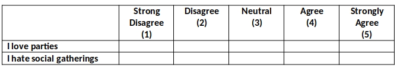
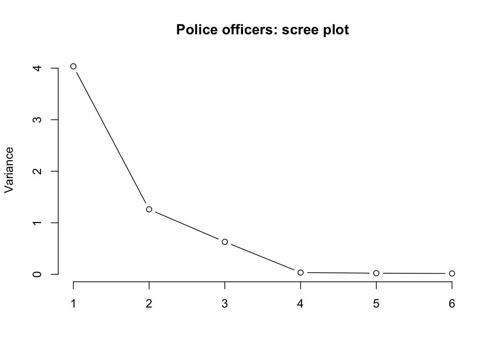
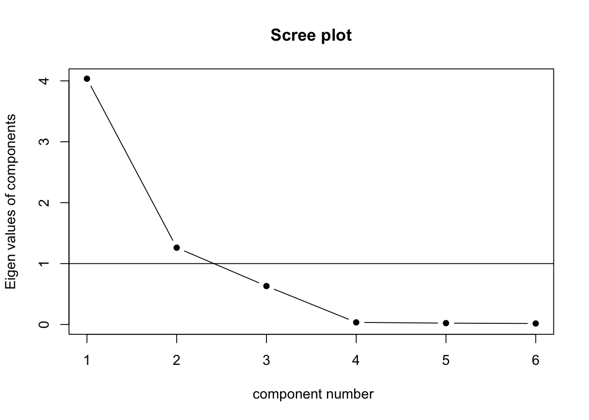
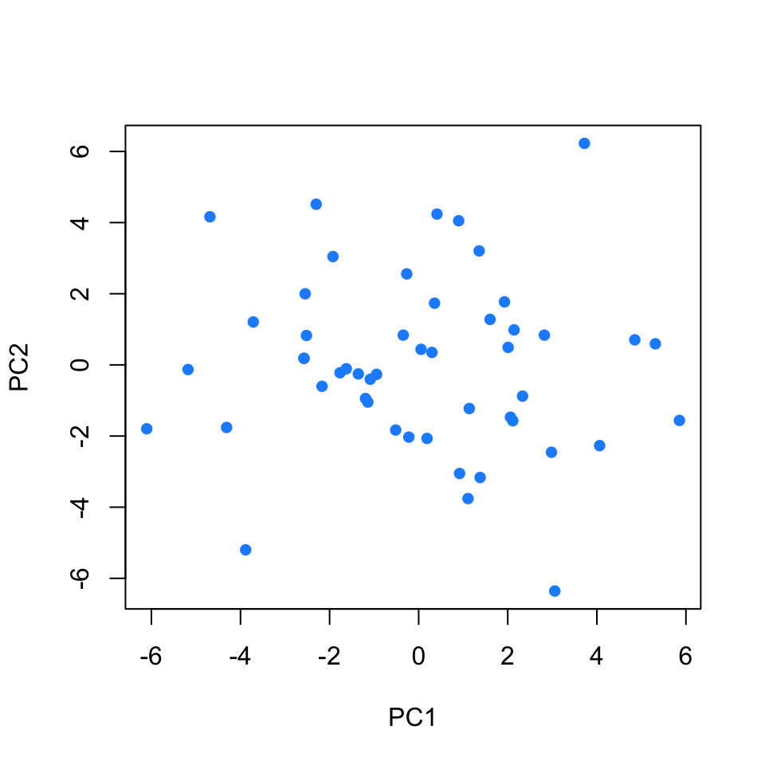

Surveys & PCA
Data wrangling for data reduction
The rms2_recodedata.csv dataset contains responses from 180 people on 10 personality items measuring Need for Cognition. A list of these items can be seen below. Each one was measured on a score from 1 to 6.
| Data Dictionary | |
|---|---|
| variable | question |
| d185 | I really enjoy a task that involves coming up with new solutions to problems |
| d186 | I only think as hard as I have to |
| d187 | I like tasks that require little thought once I've learned them |
| d188 | I tend to set goals that can be accomplished only by expending considerable mental effort |
| d189 | I find little satisfaction in deliberating hard and for long hours |
| d190 | I think best when those around me are very intelligent |
| d191 | I don't like to have the responsibility of handling a situation that requires a lot of thought |
| d192 | I prefer my life to be filled with puzzles that I must solve |
| d193 | Thinking is not my idea of fun |
| d194 | I prefer complex to simple problems |
\(\min \leq y \leq \max\)
Read the data into R. Provide numerical summaries of the variables in the data frame. If you wish, you could try the describe() function from the psych package.
Given the description of the data above, is anything looking odd?
For each item, we want to take all the values <1 and >6 and set them to NA. The ifelse() function will help you doing so.
Think about the syntax “if this is true, then make it this, else make it this”. For example, ifelse(data$variable == 5, "five", "not five")
You can do this for each variable individually, using e.g,
surveydf %>%
mutate(
d185 = ifelse(d185 == 5, "five", "not five"),
d186 = ifelse(d186 == 5, "five", "not five"),
...
...
)or we can do it using mutate() in combination with the across() function. The across function tells R to mutate the data across many variables (in this case all of them: everything()) and it also requires creating a function which represents the transformation that we want to apply to each variable. The function requires a generic variable name (in this case x), checks whether each entry in x is equal to 5 and, if it is, it replaces it by “five” while, if it isn’t, it replaces it by “not five”. The x will be replaced with each variable in the data set automatically so that with just one line you do the transformations on all d185, d186, and so on.
surveydf %>%
mutate(across(everything(), function(x) ifelse(x == 5, "five", "not five")))For each item, take all the values <1 and >6 and set them to NA.
Reverse coding
Sometimes we want to reverse-code items, so that the constructs which we believe them to be measuring all follow the same direction. For instance, consider the two questions below. Does 5 represent a similar thing on both questions? No, in fact we can theorise about a common underlying construct which would result in people generally answering 1 to “I love parties” and 5 to “I hate social gatherings” (or vice versa). So we can simply reverse the scores on one of the questions to make them follow the same pattern. 
Take a look at the descriptions of the items above. Are there any you believe should be reverse coded?
Hint: Looking at cor(na.omit(surveydf)) might help to decide!
Reverse code any items you believe should be reverse-coded.
Hint: To reverse an item with scores ranging from min 1 to max 5, we need to make all the scores of 1 become 5, scores of 2 become 4, and so on…
What number satisfies all of these equations:
- ? - 5 = 1
- ? - 4 = 2
- ? - 3 = 3
- ? - 2 = 4
- ? - 1 = 5
Rowwise summaries
Often, for various psychometric scales, we want to get an overall score for a participant across all the items in the scale.
Sometimes this will be the sum of all their scores, and sometimes this will be the mean.
These are then often used in clinical settings with various cut-offs for different ages taken to indicate things such as cognitive impairment.
R has some handy functions for calculating these scores. Remember that each participant is a row in the data set. We want, for each row, to calculate the sum.
The relevant function is rowSums()!
There is also a rowMeans() function (I bet you can’t guess what that function does!)
Principal component analysis (PCA)
Goal
The goal of principal component analysis (PCA) is to find a smaller number of uncorrelated variables which are linear combinations of the original (many) variables and explain most of the variation in the data.
Job performance data
The file job_performance.csv contains data on fifty police officers who were rated in six different categories as part of an HR procedure. The rated skills were:
- communication skills:
commun - problem solving:
probl_solv - logical ability:
logical - learning ability:
learn - physical ability:
physical - appearance:
appearance
Load the job performance data into R and all it job. Check whether or not the data were read correctly into R.
Provide summary statistics for each variable in the data set.
Is PCA needed?
If the original variables are highly correlated, it is possible to reduce the dimensionality of the problem under investigation without losing too much information.
On the other side, when the correlation between the variables under study is weak, a larger number of components is needed in order to explain sufficient variability.
Investigate whether or not the recorded variables are highly correlated and explain whether or not you PCA might be useful in this case.
Should PCA be performed on the covariance or correlation matrix?
This depends on the variances of the variables in the dataset. If the variables have large differences in their variances, then the variables with the largest variances will tend to dominate the first few principal components.
Look at the variance of the variables in the data set. Do you think that PCA should be carried on the covariance matrix or the correlation matrix?
Perform PCA
Using the principal() function from the psych package, perform a PCA of the job performance data. Call the output job_pca.
job_pca <- principal(job, nfactors = ncol(job), covar = ..., rotate = 'none')
job_pca$loadingsDepending on your answer to the previous question, either set covar = TRUE or covar = FALSE within the principal() function.
Warning: the output of the function will be in terms of standardized variables nevertheless. So you will see output with standard deviation of 1.
How many principal components should we keep?
There is no single best method to select the optimal number of components to keep, while discarding the remaining ones (which are then considered as noise components).
The following three heuristic rules are commonly used in the literature:
- The cumulative proportion of explained variance criterion
- Kaiser’s rule
- The scree plot
- Velicer’s Minimum Average Partial method
- Parallel analysis
In the next sections we will analyse each of them in turn.
The cumulative proportion of explained variance criterion
The rule suggests to keep as many principal components as needed in order to explain approximately 80-90% of the total variance.
Looking again at the PCA output, how many principal components would you keep if you were following the cumulative proportion of explained variance criterion?
Kaiser’s rule
According to Kaiser’s rule, we should keep the principal components having variance larger than 1. Standardized variables have a variance equal 1. Because we have 6 variables in the data set, and the total variance is 6, the value 1 represents the average variance in the data: \[ \frac{1 + 1 + 1 + 1 + 1 + 1}{6} = 1 \]
Hint:
The variances of each PC are shown in the row of the output named SS loadings and also in
job_pca$values. The average variance is:
mean(job_pca$values)## [1] 1Looking again at the PCA output, how many principal components would you keep if you were following Kaiser’s criterion?
The scree plot
The scree plot is a graphical criterion which involves plotting the variance for each principal component.
This can be easily done by calling plot on the variances, which are stored in job_pca$values
plot(x = 1:length(job_pca$values), y = job_pca$values,
type = 'b', xlab = '', ylab = 'Variance',
main = 'Police officers: scree plot', frame.plot = FALSE)
where the argument type = 'b' tells R that the plot should have both points and lines.
A typical scree plot features higher variances for the initial components and quickly drops to small variances where the curve is almost flat. The flat part of the curve represents the noise components, which are not able to capture the main sources of variability in the system.
According to the scree plot criterion, we should keep as many principal components as where the “elbow” in the plot occurs. By elbow we mean the variance before the curve looks almost flat.
Alternatively, some people prefer to use the function scree() from the psych package:
scree(job, factors = FALSE)
This also draws a horizontal line at y = 1. So, if you are making a decision about how many PCs to keep by looking at where the plot falls below the y = 1 line, you are basically following Kaiser’s rule. In fact, Kaiser’s criterion tells you to keep as many PCs as are those with a variance (= eigenvalue) greater than 1.
According to the scree plot, how many principal components would you retain?
Velicer’s Minimum Average Partial method
How many components should we keep according to the MAP method?
Parallel analysis
How many components should we keep according to parallel analysis?
Interpretation
Because three out of the five selection criteria introduced above suggest to keep 2 principal components, in the following we will work with the first two PCs only.
Let’s have a look at the selected principal components:
job_pca$loadings[, 1:2]## PC1 PC2
## commun 0.9840708 -0.11972298
## probl_solv 0.2233011 0.80950107
## logical 0.3287266 0.74661139
## learn 0.9869336 -0.10970488
## physical 0.9883609 -0.07835277
## appearance 0.9787497 -0.12532863and at their corresponding proportion of total variance explained:
job_pca$values / sum(job_pca$values)## [1] 0.672527675 0.210155954 0.105099073 0.005767644 0.003721180 0.002728475We see that the first PC accounts for 67.3% of the total variability. All loadings seem to have the same magnitude apart from probl_solv and logical which are closer to zero.
The first component looks like a sort of average of the officers performance scores excluding problem solving and logical ability.
The second principal component, which explains only 21% of the total variance, has two loadings clearly distant from zero: the ones associated to problem solving and logical ability. It distinguishes police officers with strong logical and problem solving skills and a low score on the test (note the negative magnitude) from the other officers.
We have just seen how to interpret the first components by looking at the magnitude and sign of the coefficients for each measured variable.
For interpretation purposes, it might help hiding very small scores in the loadings. This can be done by specifying the cutoff value in the print() function. However, this only works when you pass the loadings for all the PCs:
print(job_pca$loadings, cutoff = 0.3)##
## Loadings:
## PC1 PC2 PC3 PC4 PC5 PC6
## commun 0.984
## probl_solv 0.810 0.543
## logical 0.329 0.747 -0.578
## learn 0.987
## physical 0.988
## appearance 0.979
##
## PC1 PC2 PC3 PC4 PC5 PC6
## SS loadings 4.035 1.261 0.631 0.035 0.022 0.016
## Proportion Var 0.673 0.210 0.105 0.006 0.004 0.003
## Cumulative Var 0.673 0.883 0.988 0.994 0.997 1.000In the literature, some authors also suggest to look at the correlation between each principal component and the measured variables:
# First PC
cor(job_pca$scores[,1], job)## commun probl_solv logical learn physical appearance
## [1,] 0.9854237 0.2137116 0.3187957 0.9882455 0.9885528 0.9809939The first PC is strongly correlated with all the measured variables except probl_solv and logical.
As we mentioned above, all variables seem to contributed to the first PC.
# Second PC
cor(job_pca$scores[,2], job)## commun probl_solv logical learn physical appearance
## [1,] -0.1634967 0.7924169 0.7378895 -0.1536895 -0.1220727 -0.1693193The second PC is strongly correlated with probl_solv and logical, and slightly negatively correlated with the remaining variables. This separates police offices with clear logical and problem solving skills and a small score on the test (negative sign) from the others.
Plot the retained principal components
We can now visualise the statistical units (police officers) in the reduced space given by the retained principal components.
plot(x = job_pca$scores[, 1], y = job_pca$scores[, 2],
pch = 16, col = 'dodgerblue', xlab = 'PC1', ylab = 'PC2')

If negative correlations were present, we would think in absolute value.↩︎